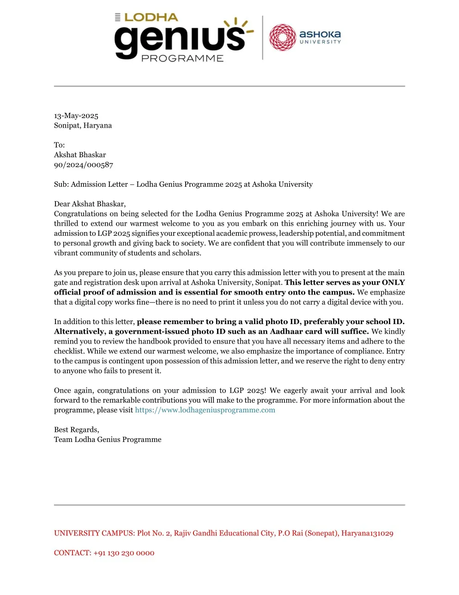
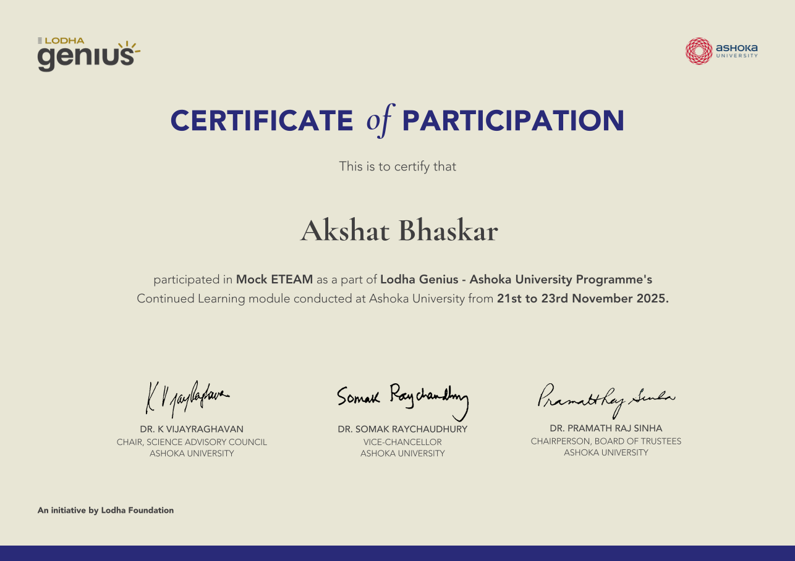

Lodha Genius Programme
May – June 2025 · Ashoka University, Sonepat · continued 2025–2026
 got accepted to and completed the one-month Lodha Genius Programme On Campus Module at Ashoka University in May and June 2025. The Lodha Genius Programme is a fully funded, all-expenses-paid, highly competitive summer programme focusing on Science and Mathematics with an acceptance rate of approximately 3%, hosted at Ashoka University and sponsored by the Lodha Foundation. Though the On-Campus Module has ended, I am currently engaged in the Continued-Learning Module of LGP, where I am preparing for the European Tournament of Enthusiastic Apprentice Mathematicians (ETEAM) 2026 and the International Tournament of Young Mathematicians (ITYM) 2026, while also auditing the Research Track in Mathematics.
got accepted to and completed the one-month Lodha Genius Programme On Campus Module at Ashoka University in May and June 2025. The Lodha Genius Programme is a fully funded, all-expenses-paid, highly competitive summer programme focusing on Science and Mathematics with an acceptance rate of approximately 3%, hosted at Ashoka University and sponsored by the Lodha Foundation. Though the On-Campus Module has ended, I am currently engaged in the Continued-Learning Module of LGP, where I am preparing for the European Tournament of Enthusiastic Apprentice Mathematicians (ETEAM) 2026 and the International Tournament of Young Mathematicians (ITYM) 2026, while also auditing the Research Track in Mathematics.

2025 acceptance letter — admission to the fully funded residential programme at Ashoka University, ~3.2% acceptance.
Academic Specialisation
I specialised in Pure Mathematics, taking courses in Number Theory, Group Theory, Linear Algebra, and Geometry (Plane to Spherical). The academic rigour was remarkable: trying to solve open problems at 3 am, working together to crack problem sets in the library an hour before the deadline, and embracing failure as part of the process.
Number Theory
Taught by Professor Shanta Laishram
Covered over all four weeks with daily 3-hour lectures, plus tutorials every evening (sometimes running 4–5 hours). The course loosely followed Elementary Number Theory by David Burton. My final presentation focused on Euler's Criterion for quadratic residues modulo primes, judged on mathematical rigour by the Professor, Programme Instructor, and TAs.

Number theory mid-term: Euler's Criterion — proving the characterization of quadratic residues modulo an odd prime, part of the number theory coursework.
Algebra & Group Theory
Taught by Professor Niladri Sekhar Patra
Covered in the final two weeks, working through Groups and Symmetry by M.A. Armstrong. Assessment consisted of daily problem sets, twice-weekly quizzes, and a final exam.
Linear Algebra
Taught by Professor Sagar Shrivastav
Used the same notes and material that Professor Sagar uses for his undergraduate courses (MAT-1001 and CS-2210) at Ashoka. Lectures on Mondays and Fridays, with quizzes in the first 15 minutes of every class and undergraduate problem sets as primary assessment.
Geometry, Plane to Spherical
Taught by Professor Mohit Upmanyu
Covered in the first two weeks, following Geometry Revisited by H.S.M. Coxeter. Daily exercises from the text, once-per-lecture quizzes, and a final exam.
Continued Learning Module
Foundations of ETEAM
Taught by Professor Sagar Shrivastava · Invitation to top 10% of LGP Scholars
A year-long enrichment course preparing scholars for the European Tournament of Enthusiastic Apprentice Mathematicians (ETEAM) 2026 and the International Tournament of Young Mathematicians (ITYM) 2026. Conducted weekly over 1.5 hours, the course covers algebra, advanced geometry, number theory, group theory, calculus, probability, logic, discrete mathematics, real analysis, and more, emphasising conceptual depth and mathematical maturity over rote technique.
MOCK ETEAM Simulations are held periodically, dividing students into groups and assigning each the role of Reporter, Opponent, and Reviewer across different problems, mirroring the exact tournament format. Simulations have taken place online (October 26, 2025) and offline at Ashoka University (November 25–26, 2025, travel stipends provided). The full rules and syllabus for ETEAM are here.

Mock ETEAM sessions — residential simulations of the European Tournament of Enthusiastic Apprentice Mathematicians, rotating through Reporter, Opponent, and Reviewer roles.
Research Track in Mathematics
Taught by Professor Sagar Shrivastava
Designed to introduce mathematically talented high school students to the world of mathematical research. Moving beyond problem-solving, the course emphasises exploration, critical reading, and exposition, core elements of the research process. Each month covers a theme from an area with rich theoretical foundations and active research culture. We read 1–2 expository papers per week, discuss them in live sessions, work on related problem sets, and write a monthly exposition synthesising our learning, examples, and reflections on proof techniques.
Great Ideas Seminars
Alongside the mathematics curriculum, LGP hosted a series of Great Ideas Seminars: talks and conversations with world-class scientists, Nobel laureates, and innovators spanning mathematics, cosmology, biology, fashion, and more.
- Euler's Work on Zeta Values, Professor Haruzo Hida, 2019 Leroy P. Steele Prize, AMS; Distinguished Research Professor, UCLA
- Great Ideas in Cosmology: The Expanding Universe, Professor Raja GuhaThakurta, UC Santa Cruz & Professor Brian Schmidt, 2011 Nobel Prize in Physics, Vice-Chancellor, ANU
- What is Life?, Sir Paul Nurse, 2001 Nobel Prize in Physiology or Medicine; former President of the Royal Society; Director, Francis Crick Institute
- Biology: A Bridge between Science, Medicine and Space Exploration, Dr. Brigitte Godard, ESA Space Surgeon & Dr. Sharmila Bhattacharya, Principal Investigator, NASA Ames
- Whence Biological Forms, Professor Thomas Lecuit, Professor, Collège de France
- Breaking Barriers, Hari Shroff, Senior Group Leader, Janelia Research Campus; developer of breakthrough optical microscopy methods
- Simple Science Toys, Arvind Gupta, Padma Shree; Indian science educator, toy inventor, author
- Where Fashion Meets Innovation, Mossi Traoré, French fashion designer, Founder of the MOSSI label
- Site Visit: Astrophotography at Aperture Telescopes, Shri Ajay Talwar, astrophotographer for 30+ years; one of only two people in the world to have captured a tutulemma (an analemma containing a solar eclipse)
On the final day, our graduation certificates were awarded by Professor Somak Raychaudhury, Vice-Chancellor of Ashoka University and past Director of IUCAA.
Reflection
Above all, what I'll treasure most are the people: the 3 am Maggi and the friendships that turned four weeks into home. Thank you to the faculty, mentors, and peers who shaped this transformative experience.